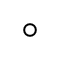

Return link to the symbol table

The symbol above shows a centre of inversion. It is present in all centrosymmetric space group diagrams. A fractional value next to the symbol indicates the height of the inversion centre above the XY plane. A centre of inversion at the origin will have the corresponding symmetry operator -x,-y,-z. It has the written symbol "-1" (where the minus sign is usually written above the digit). On the space group diagrams, it may be shown in combination with twofold, threefold, fourfold, or sixfold rotation axes or two-one, four-two, or six-three screw axes.